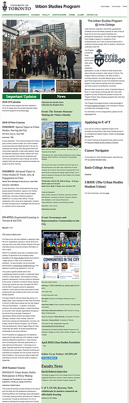
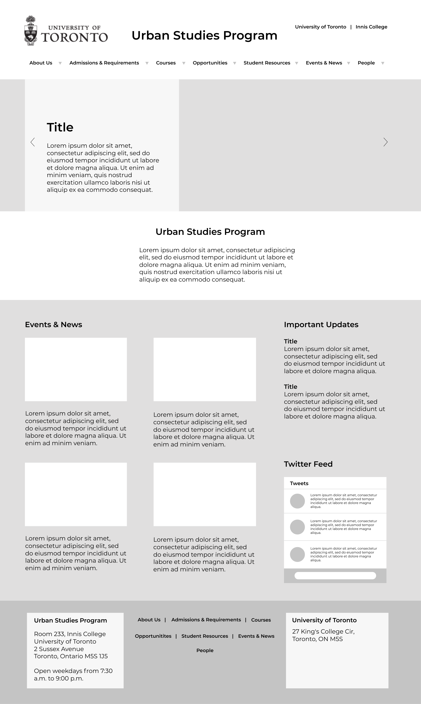

.png)
Urban Studies
Website Redesign
Improving the web experience for prospective and current students to find information about the Urban Studies program
Improving the web experience for prospective and current students to find information about the Urban Studies program
The Urban Studies Program website serves as an essential information hub for current and prospective University of Toronto undergraduate students. However, the current website design has not been updated since its creation 10 years ago, and is difficult to use for both the stakeholders and its intended audiences.
How can we better address current users' information needs through the website's new redesign?
Oct-Dec 2018
Website
UX Designer
and Researcher
Victoria Ho
Adrienn Kassai
Yuan Ma
Jessica Yao
Card Sorting
Tree Testing
Usability Testing
Storyboarding
Onpoint Auditor
Optimal Workshop
Figma
.png)
What are the stakeholder goals and limitations for this project?
It was important to understand the stakeholders’ perspective, and any limitations that would be critical for this project.
We interviewed the program director, program coordinator and the IT coordinator
to find out what the expectations, goals and limitations are for the project.
We also conducted a content audit using OnPoint Content Auditor, and used the report generated to develop a sitemap for the existing website.
.jpg)
How do users interact with the website?
To learn more about users’ current experience with the website, we enlisted the help of the Urban Studies department to
distribute our surveys to the student body. We also
conducted user interviews and usability tests, to learn where they go to
find program information, what they struggle or like about the existing site, and what content is important to them.

Participants: Urban Studies students (Major. Minor, Prospective)
Preparation: Created using Google Forms - distributed with the help of the student council
The most important categories for participants when using the website are 1. Course information 2. Graduation requirements
66.7% of first year students found the site hard or extremely hard to navigate, while only 25% of fourth year students found the site hard to navigate (Note: may be correlated with year of study)

Participants: Urban Studies students (Major. Minor, Prospective)
Preparation: Representative users were selected by pre-screening questionnaire, and ran pilot tests to check for leading questions
Labelling was unclear and vague, e.g. “Forms” main navigation category online has one form, the rest are unrelated to forms
More emphasis is needed on the experiential program (since it is a major part of the program) and career-related resources
Participants: Urban Studies students (Major. Minor, Prospective)
Preparation: Representative users were selected by pre-screening questionnaire, and ran pilot tests to check for leading questions
All tasks were successfully completed, but participants expressed doubt as to whether the content was incomplete/unsatisfactory
In general, participants seemed unsure about the website’s content, due to website’s disorganized layout and presence of outdated information
From our research findings, we determined that the website needed a rehaul of its global navigation and organization of content. To inform the new structure and navigation of the current website, we designed an open, online card sorting study using Optimal workshop.
In the study, we used a combination of pre-existing labels (i.e. cards), as well as modified/new labels based on our findings from the research phase.
The labels are of three types:
1
New labels based on content users requested to be on the new website
2
Existing labels that were modified due to user confusion
3
Existing labels that were modified to create consistency between labels
Creating new navigation and reorganizing content
During the study, we asked participants to generate categories to place the labels/cards under, and compared all the category labels afterwards to understand the language that is intuitive for users, and whether these categories contain similar cards.
I took the categories and organized it in a list, then created standardized category names based on categories with similar names and cards to help inform our global navigation menu.
We also analyzed the similarity matrix results generated by Optimal Workshop to understand which cards were commonly grouped together by participants. I created a table on the right highlighting important card groupings and percentages.


New Sitemap
By identifying common patterns in category names and card groupings through the similarity matrix, we were able to match category names with content, and make sure similar cards were grouped together based on users' mental models.
We used these patterns to inform a new information architecture schematic for the website redesign.
.jpg)
Sketching Mockups
Once we completed our analysis of the card sorting results, we individually drew up rough sketches for our redesign. Guided by visual design principles on layout, we discussed our designs and collaboratively created an annotated wireframe that included best aspects from our sketches.

Tree testing to evaluate new navigation
To evaluate our redesign, I ran tree tests with 4 participants, and consolidated the results of the test below. Based on their success rates and timing to complete the task, we determined the participants found the redesign clear and intuitive.

Creating Prototypes
After evaluation of the redesign, we created a medium-fidelity clickable prototype available here. We also created annotated workflows to present to our stakeholders.


During the presentation, I highlighted our process, research and key findings that informed our redesign, as well as benefits of the new design including:
1
Simplifying the home page that users found to be overwhelming and cluttered, and emphasizing content important to users
2
Improving the sructure of the website in various ways, e.g. adding breadcrumb trails to support users’ navigation, reorganizing content in different categories that is more intutive for users, creating new labels that clearly communicates its content
Before
After
In hindsight, we should have conducted a tree test study with the existing website's architecture, to see whether there was an improvement on the usability of the website ('before and after' bench-marking). It would have made for a stronger case for our redesign if we could do a direct comparison with the results.
Furthermore, our participant size should have been larger for our tree test study (of our new design) in order to get results that could better validate our navigation system redesign. Although it was positive, the results should be taken with a grain of salt given how small our participant pool was.
Our next steps would be to re-run the tree test with more participants, and conduct a closed card sorting study to find out if representative users agreed on our revised organization and labeling systems.